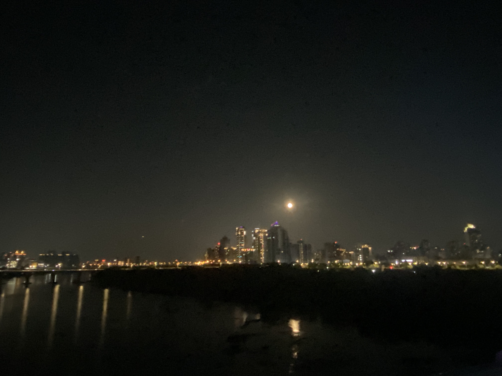

新北市的政治及經濟中心
全新北人口數最多行政區,新北市政府也位於此,板橋車站高鐵、台鐵、捷運、轉運中心共構,設有新板特區商圈,擁有高度集中的行政機關、商辦大樓、百貨巨頭與頂級金融機構
充滿人文的地方。
全新北人口數最多行政區,新北市政府也位於此,板橋車站高鐵、台鐵、捷運、轉運中心共構,設有新板特區商圈,擁有高度集中的行政機關、商辦大樓、百貨巨頭與頂級金融機構
全台最知名的冬季活動，聖誕節前後在板橋車站周邊登場,結合3D光雕主燈秀、大型造景燈飾,對,人超多,板南線捷運通常滿人

位於板橋果菜市場附近的新月橋,夜景好看,走過去橋的另一頭是新莊,可以去橋下的廟口夜市逛